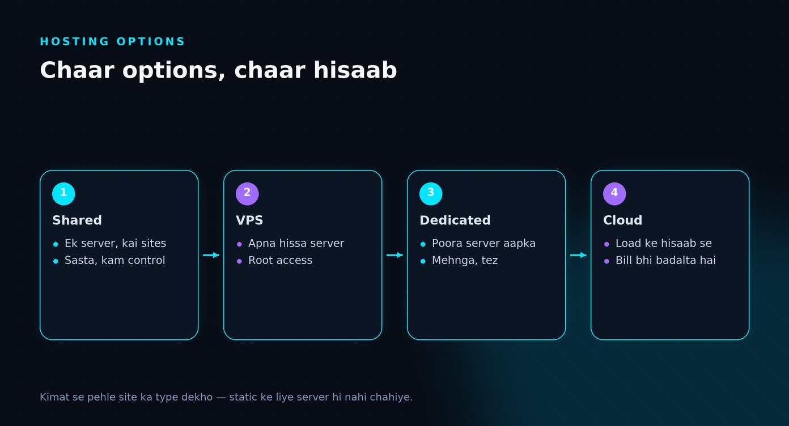
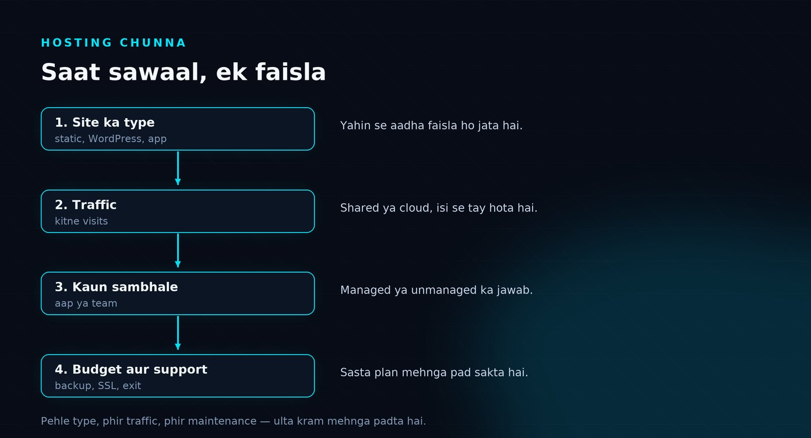

Web Hosting Kya Hai? Shared, VPS aur Cloud ka Farq
जब पहली बार site बनाते हैं, तो सब कुछ अपने laptop पर चलता है — localhost:3000 पर page खुलता है और लगता है कि काम हो गया। फिर दोस्त को link भेजते हैं और वह नहीं खुलता। क्यों? क्योंकि आपका laptop internet पर एक public server नहीं है। Site को किसी ऐसी मशीन पर रखना पड़ता है जो 24 घंटे चले, public IP हो, और हर request का जवाब दे — उसी को hosting कहते हैं।
इस guide में मैं hosting के सारे आम options खोलूँगा — shared, VPS, dedicated और cloud — और बताऊँगा कि कौन सा किसके लिए सही है। साथ में static hosting का वह रास्ता भी, जिस पर यह site खुद चल रही है, managed और unmanaged का फर्क, plan चुनने के सात सवाल, और migrate करते समय किन चीज़ों का ध्यान रखना चाहिए।
छोटा जवाब: Web hosting वह service है जो आपकी site की files एक server पर रखती है और उसे internet से जोड़ती है। Shared hosting में एक server कई sites में बँटा होता है, VPS में आपको उसका एक हिस्सा मिलता है, dedicated में पूरा server, और cloud में आप resources जितने चाहें बढ़ा-घटा सकते हैं। छोटी static site के लिए GitHub Pages जैसी मुफ़्त hosting काफ़ी है।
Hosting me asal me kya milta hai
Hosting के तीन हिस्से होते हैं। पहला — server, यानी वह मशीन जिस पर आपकी files रहती हैं और जो request का जवाब देती है। दूसरा — public IP, जिस पर internet से request आती है। तीसरा — DNS, जो आपके domain को उस IP से जोड़ता है।
इसीलिए जब site नहीं खुलती, तो तीनों जाँचने पड़ते हैं। Hosting खरीद ली पर DNS नहीं जोड़ा, तो domain किसी पुरानी जगह जाता रहेगा। DNS जोड़ दिया पर server बंद है, तो connection fail होगा। दोनों ठीक हैं पर firewall port 443 block कर रहा है, तो भी page नहीं खुलेगा। यह क्रम समझ लेने से debugging आधी हो जाती है।

Shared hosting: sabse sasta shuruaat
Shared hosting में एक physical server पर कई websites रखी जाती हैं। CPU, RAM और disk सब साझा होते हैं, और hosting कंपनी हर site को अलग folder और अलग database देती है। यह सबसे सस्ता option है — महीने के कुछ सौ रुपये में शुरू हो जाता है।
फायदा साफ़ है: कीमत कम, setup आसान, cPanel जैसा panel मिल जाता है जिससे WordPress एक click में install हो जाता है। छोटी business site, blog या portfolio के लिए यह अक्सर काफ़ी है।
नुकसान भी साफ़ है — "noisy neighbour" की समस्या। अगर उसी server पर किसी और की site को अचानक बहुत traffic मिल जाए, तो आपकी site भी धीमी हो सकती है। साथ ही आपके पास server की सेटिंग बदलने की आज़ादी नहीं होती; जो software version कंपनी दे, वही चलेगा।
VPS: apna hissa, apna control
VPS (Virtual Private Server) में एक physical server को virtualization से कई हिस्सों में बाँटा जाता है। हर हिस्से को अपनी CPU, RAM और disk मिलती है, और वह दूसरे हिस्सों से अलग चलता है। यानी आपको एक छोटा server मिलता है जिसका root access आपके पास है।
यहीं से असली सीख शुरू होती है — आपको Linux, web server (Nginx या Apache), database और firewall खुद सेट करना पड़ता है। यह शुरुआत में डरावना लगता है, पर एक बार सीख जाने पर आपको पता होता है कि अंदर क्या चल रहा है।
VPS की कीमत shared से ज़्यादा होती है, पर control भी ज़्यादा। जब आपको Node.js या Python app चलानी हो, custom software चाहिए हो, या किसी खास port पर service चलानी हो — तब shared hosting काम नहीं करेगी और VPS सही रास्ता है।
Dedicated aur cloud
Dedicated hosting में पूरा physical server सिर्फ़ आपका होता है। सबसे ज़्यादा performance और control, पर सबसे ज़्यादा कीमत और सारी ज़िम्मेदारी आपकी। यह उन्हीं के लिए ठीक है जिनका load भारी और लगातार है — बड़ा e-commerce, video platform या enterprise app.
Cloud hosting में आप एक server नहीं, बल्कि कई machines पर फैला हुआ system लेते हैं। Resources माँग के हिसाब से बढ़ते-घटते हैं, और एक machine बंद हो जाए तो दूसरी सँभाल लेती है। AWS, Google Cloud और Azure इसी तरह काम करते हैं।
Cloud का फायदा लचीलापन है — Sale के दिन traffic दस गुना हो जाए तो resources बढ़ा दें, और अगले दिन घटा दें। नुकसान यह है कि खर्च का अंदाज़ा लगाना मुश्किल हो सकता है; छोटी गलती से बिल बहुत बड़ा आ सकता है। इसीलिए budget alerts पहले दिन से सेट करें।
| Option | किसके लिए | कीमत | Control |
|---|---|---|---|
| Shared | Blog, portfolio, छोटी business site | सबसे कम | कम |
| VPS | Custom app, सीखने वाले developers | मध्यम | ज़्यादा |
| Dedicated | भारी और लगातार load | ज़्यादा | पूरा |
| Cloud | बदलता traffic, scaling | उपयोग के हिसाब से | ज़्यादा |
| Static | HTML/CSS site, docs, blog | अक्सर मुफ़्त | सीमित |
Static hosting: jo is site par chal rahi hai
अगर आपकी site सिर्फ़ HTML, CSS, JavaScript और images से बनी है — कोई database नहीं, कोई server-side code नहीं — तो आपको VPS की ज़रूरत नहीं। ऐसी files को किसी भी static host पर रखा जा सकता है और वह बहुत तेज़, बहुत सस्ता और बहुत सुरक्षित रहता है।
इस site का हर post एक HTML file है जिसे एक script बनाता है, और वह GitHub पर रखी है। जब भी कोई बदलाव push होता है, GitHub Actions उसे build करके deploy कर देता है। कोई server नहीं, कोई database नहीं, कोई maintenance नहीं — और hosting का खर्च शून्य।
Netlify, Cloudflare Pages और Vercel भी यही काम करते हैं, कुछ अतिरिक्त सुविधाओं के साथ — जैसे form handling, preview deployments और edge caching. अगर आपकी site static है, तो पहले यही रास्ता देखें; VPS पर पैसा और समय दोनों बचेंगे।
Managed ya unmanaged
यह फर्क hosting के type से भी ज़्यादा मायने रखता है। Managed में कंपनी server का maintenance सँभालती है — updates, backups, security patches और support. आप सिर्फ़ अपनी site पर ध्यान देते हैं। Unmanaged में server आपका, और सब कुछ आपकी ज़िम्मेदारी — OS updates से लेकर firewall तक।
शुरुआत में managed चुनें। जब तक आपको यह पता न हो कि SSH क्या है, cron job कैसे लगाता है और log कहाँ मिलते हैं, unmanaged server सिर्फ़ सिरदर्द देगा। और अगर आप सीखना चाहते हैं, तो एक सस्ता VPS लेकर उस पर कुछ महीने प्रयोग करें — पर उस पर कोई ज़रूरी site मत रखें।
Plan chunne ke saat sawal
- Site कैसी है? Static है तो static hosting; WordPress है तो shared या managed WordPress; custom app है तो VPS या cloud.
- Traffic कितना है? महीने के कुछ हज़ार visits पर shared काफ़ी है; लाखों पर cloud या dedicated सोचें।
- कौन सँभालेगा? आप खुद या कोई team? जवाब से managed/unmanaged तय होता है।
- Backup कौन लेगा? Hosting के backup पर निर्भर मत रहें; अपना भी रखें।
- SSL मिलेगा या नहीं? आज मुफ़्त Let's Encrypt हर जगह मिलना चाहिए — न मिले तो दूसरी कंपनी देखें।
- Support कैसा है? Chat या ticket का जवाब कितनी देर में आता है, यह पहले महीने में पता चल जाता है।
- बाहर निकलना आसान है? Data export और domain transfer की policy पहले पढ़ लें।
India ke users ke liye kya matter karta hai
अगर आपके ज़्यादातर users भारत में हैं, तो server का location मायने रखता है। मुंबई या सिंगापुर का server भारत से 20–50 मिलीसेकंड दूर होता है, जबकि अमेरिका का server 200 मिलीसेकंड से ऊपर जा सकता है। एक request में यह फर्क छोटा लगता है, पर 50 requests वाले page पर यह सेकंडों में बदल जाता है।
इसका सबसे आसान हल है CDN — Content Delivery Network. यह आपकी static files दुनिया के कई शहरों में copy कर देता है और हर user को सबसे नज़दीकी copy देता है। Cloudflare का मुफ़्त plan भी यह काम कर देता है, और साथ में HTTPS और basic protection मिल जाती है।

Kharch ka asli hisaab
Hosting की कीमत देखते समय चार चीज़ें जोड़ें। पहली — plan का monthly या yearly charge; yearly अक्सर सस्ता होता है पर पैसा पहले देना पड़ता है। दूसरी — domain का renewal, जो पहले साल के discount के बाद बढ़ जाता है। तीसरी — SSL, अगर मुफ़्त नहीं है। चौथी — backup और email, जो अलग add-on हो सकते हैं।
Cloud में एक और बात जोड़ें — data transfer. बाहर जाने वाला data अलग से charge होता है, और यही अक्सर सबसे बड़ा अंतर पैदा करता है। इसीलिए cloud पर जाने से पहले एक महीने का अनुमानित traffic निकालें: pages × average page size × visits. वही संख्या आपको बता देगी कि बिल किस दिशा में जाएगा।
छोटी site के लिए सबसे समझदारी वाला रास्ता अक्सर यही है — static hosting मुफ़्त, domain सस्ता, CDN मुफ़्त, और पैसा सिर्फ़ domain पर। जब लगे कि database या server-side code चाहिए, तब अगला step लें।
Migrate karne ka process
1. पुरानी जगह का पूरा backup लें। Files, database और email — तीनों. सिर्फ़ files का backup काफ़ी नहीं है।
2. नई जगह पर site सेट करें और test करें। अभी DNS मत बदलें; पहले hosts file या temporary URL से देखें कि सब चल रहा है।
3. TTL पहले कम करें। Migration से 24 घंटे पहले DNS records का TTL 300 सेकंड कर दें, ताकि बदलाव जल्दी फैले।
4. DNS बदलें और नापें। नए IP पर traffic आना शुरू हो जाएगा। दोनों जगह logs देखें कि कुछ छूट तो नहीं रहा।
5. एक हफ़्ते बाद पुरानी जगह बंद करें। जल्दबाज़ी में बंद करने से वे users प्रभावित होते हैं जिनका DNS cache अभी पुराना है।
Paanch common galtiyan
1. सिर्फ़ कीमत देखकर plan लेना। सस्ता plan अगर हर हफ़्ते बंद हो, तो महंगा पड़ेगा।
2. Backup न रखना। Hosting कंपनी का backup होता है, पर restore आपको खुद करना पड़ता है — और वह भी तब जब आपने उसे चालू रखा हो।
3. SSL को बाद में देखेंगे कहना। HTTPS आज optional नहीं है; browsers बिना HTTPS वाली site पर warning दिखाते हैं।
4. Traffic से ज़्यादा storage देखना। ज़्यादातर छोटी sites पर storage की समस्या नहीं होती; bandwidth और CPU सीमा असली अड़चन है।
5. Domain और hosting एक ही कंपनी से लेना बिना सोचे। सुविधा अच्छी है, पर बाद में बाहर निकलना मुश्किल हो सकता है। Domain अलग रखने से लचीलापन बढ़ता है।
Mera anubhav
मेरी पहली site एक सस्ती shared hosting पर थी। शुरू में सब ठीक चला, फिर एक दिन page 8 सेकंड लेने लगा। Support ने कहा "server पर load है"। दो हफ़्ते बाद समस्या वापस आई। तब मैंने महसूस किया कि shared hosting में मेरे पास कोई control नहीं था — न मैं देख सकता था कि क्या हो रहा है, न बदल सकता था।
उसके बाद मैंने एक छोटा VPS लिया और सीखना शुरू किया। पहले महीने में site दो बार बंद हुई — एक बार disk full होने से, एक बार firewall की गलत setting से। पर उसी महीने में मैंने logs पढ़ना, cron से backup लेना और Nginx configure करना सीख लिया। यह सीख बाद के हर project में काम आई।
आज जब कोई static site बनाता हूँ, तो सबसे पहले static hosting देखता हूँ — जैसे यह site. server की ज़रूरत ही नहीं पड़ती, और जो समय maintenance से बचता है, वह content पर लगता है। यह मेरी सबसे बड़ी सीख रही: जितनी कम चीज़ें आपको सँभालनी हों, उतना बेहतर।
नतीजा
Hosting आपकी site को internet पर रखती है — server, IP और DNS तीनों मिलकर। Static site के लिए मुफ़्त static hosting सबसे अच्छा है; छोटी dynamic site के लिए shared या managed; custom app के लिए VPS; बदलते load के लिए cloud. Plan चुनने से पहले site का type, traffic, maintenance और backup तय करें, और migrate करने से पहले TTL घटाकर पूरा backup रखें।
आगे पढ़ें: domain और DNS records — जहाँ A, CNAME और MX का practical setup है, और frontend vs backend — जहाँ बताया है कि hosting पर असल में क्या चलता है।
अक्सर पूछे जाने वाले सवाल
क्या मुफ़्त hosting पर असली site चला सकते हैं?
Static site के लिए हाँ — GitHub Pages, Cloudflare Pages और Netlify का मुफ़्त plan काफ़ी है। Database वाली site के लिए नहीं।
Shared hosting से VPS पर कब जाएँ?
जब custom software चलाना हो, traffic बढ़ रहा हो, या बार-बार "server load" की शिकायत आ रही हो।
Hosting बदलने पर site कितनी देर बंद रहती है?
अगर सही क्रम से करें तो बंद नहीं होती। TTL पहले घटाएँ, नई जगह test करें, फिर DNS बदलें।
क्या एक hosting पर दो domain चला सकते हैं?
हाँ, ज़्यादातर plans में add-on domains मिलते हैं। पर हर domain का SSL और DNS अलग से सेट करना पड़ता है।
Cloud hosting महंगी क्यों पड़ जाती है?
क्योंकि बिल उपयोग पर निर्भर है — data transfer, storage और requests. बिना alert और limit के खर्च बढ़ सकता है।